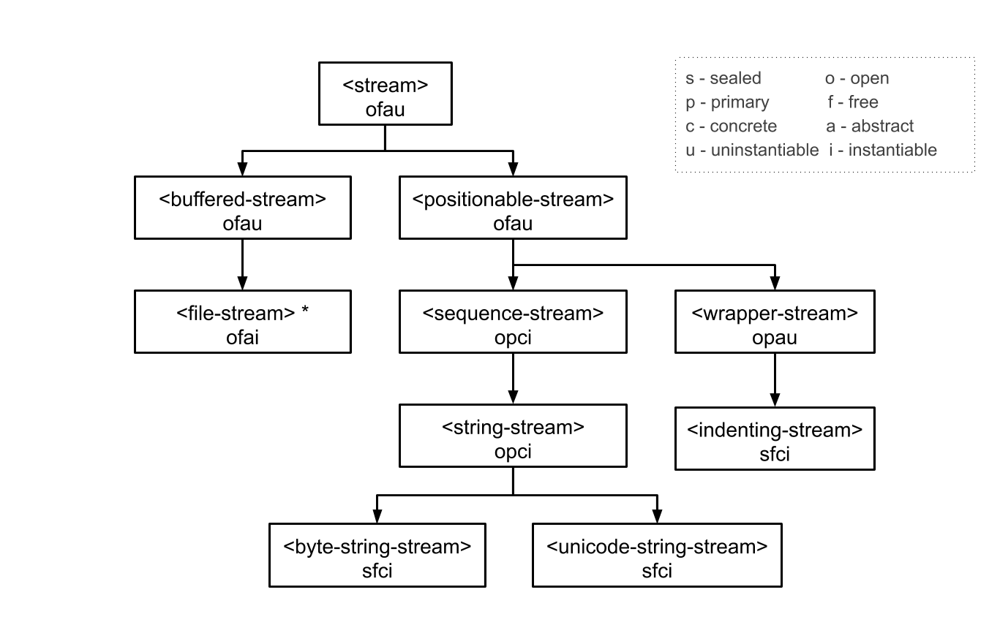

The streams Module¶
This document describes the Streams module, which allows you to establish and control input to and output from aggregates of data, such as files on disk, or sequences. This module, together with the Standard-IO module, provides similar functionality to the java.io package in Java. See The standard-io Module, for details about the Standard-IO module in Dylan.
Concepts discusses the basic concepts and terminology involved in streaming over data. Stream classes describes the different classes of stream available, and how to create them, and Reading from and writing to streams describes how to read from and write to them.
More specialized subjects are covered next: Locking streams discusses locking streams while they are in use; Using buffered streams describes using buffered streams; Wrapper streams describes wrapper streams; Conditions the different stream-specific error conditions that can be raised. For the most part, you do not have to worry about the information in these later sections when using streams.
Finally, The streams Module Reference gives complete details on all interfaces in the Streams module, in alphabetical order.
Goals of this module¶
A generic, easy-to-use interface for streaming over aggregates of data. The same high-level interface for consuming or producing is available irrespective of the type of stream, or the types of the elements being streamed over.
Efficiency, such that it may be used as a basis for the common cases of file and network I/O.
Access to an underlying buffer management protocol.
Concepts¶
A stream provides sequential access to an aggregate of data, such as a Dylan
<sequence> or a disk file. Streams grant this access according to a
metaphor of reading and writing: elements can be read from streams or
written to them.
Streams are represented as general instances of the class <stream>.
It is usual to say that a stream is established over the data
aggregate. Hence, a stream providing access to the string "hello world" is
said to be a stream over the string "hello world".
Streams permitting reading operations are called input streams. Input streams allow elements from the underlying data aggregate to be consumed. Conversely, streams permitting writing operations are called output streams. Output streams allow elements to be written to the underlying data aggregate. Streams permitting both kinds of operations are called input-output streams.
Input Streams¶
The Streams module provides a set of functions for reading elements from
an input stream. These functions hide the details of indexing,
buffering, and so on. For instance, the function read-element
reads a single data element from an input stream.
The following expression binds stream to an input stream over the
string "hello world":
let stream = make(<string-stream>, contents: "hello world");
The first invocation of read-element on stream returns the
character “h”, the next invocation “e”, and so on. Once a stream has
been used to consume all the elements of the data, the stream is said to
be at its end. This condition can be tested with the function
stream-at-end?. The following code fragment applies my-function
to all elements of the sequence:
let stream = make(<sequence-stream>, contents: seq);
while (~stream-at-end?(stream))
my-function(read-element(stream));
end;
When all elements of a stream have been read, further calls to
read-element result in an <end-of-stream-error> condition being
signaled. Optionally, you may provide a distinguished value to return instead,
with the on-end-of-stream: parameter. This is often more concise and most
reading functions support it.
Output Streams¶
The Streams module also provides a set of functions for writing data elements
to an output stream. Like the functions that operate upon input streams, these
functions hide the details of indexing, growing an underlying buffer, and so
on. For instance, the function write-element writes a single data element
to an output stream.
The following forms bind stream to an output stream over an empty
string and create the string “I see!”, using the function
stream-contents to access all of the stream’s elements.
let stream = make(<string-stream>, direction: #"output");
write(stream, "I see!");
stream-contents(stream);
Calling write on a sequence has the same effect as calling
write-element on all the elements of the sequence. For more
information about writing to streams, see Writing to streams.
Positionable Streams¶
Some streams are positionable; that is, any element of the stream can
be accessed at any time. Positionable streams allow you to set the
position at which the stream is accessed by the next operation. The
following example uses positioning to return the character “w” from a
stream over the string "hello world":
let stream = make(<string-stream>, contents: "hello world");
stream-position(stream) := 6;
read-element(stream);
The following example returns a string. The first ten characters are the
fill characters for the underlying sequence of the stream. The fill
character for <string> is “ “ (the space character), so in the
example below, the first ten characters are spaces.
let stream = make(<string-stream>, direction: #"output");
adjust-stream-position(stream, 10);
write(stream, "whoa!");
stream-contents(stream);
You can request a sequence containing all of the elements of a
positionable stream by calling stream-contents on it. If the
positionable stream is a <file-stream>, then it must be
readable. Otherwise, it must be a sequence stream. The sequence returned
never shares structure with any underlying sequence that might be used
in the future by the stream. For instance, the string returned by
calling stream-contents on an output <string-stream> will
not be the same string as that being used to represent the string
stream.
When making an input <string-stream>, you can cause the stream
to produce elements from any subsequence of the supplied string. For
example:
read-to-end(make(<string-stream>,
contents: "hello there, world",
start: 6,
end: 11));
This example evaluates to "there". The interval (start, end)
includes the index start but excludes the index end. This is
consistent with standard Dylan functions over sequences, such as
copy-sequence. The read-to-end function is one of a number
of convenient utility functions for operating on streams and returns all
the elements up to the end of the stream from the stream’s current
position.
Stream classes¶
The exported streams class heterarchy includes the classes shown in the image below. Classes shown in bold are all instantiable.

Note
<file-stream> is included for completeness but is actually
exported from the file-system module.
Sequence streams¶
Dylan provides various functions for manipulating sequences, such as
concatenate and copy-sequence, but sometimes it can be useful to
use the streams model to create or consume sequences. For example, if you’re
writing a library that reads bytes from a network socket you might write tests
that use a <sequence-stream> over a <byte-vector> to mock the
network stream.
String streams are the most commonly used type of sequence stream so there are several features to make using them easier.
Calling
make(<sequence-stream>, contents: "a string", direction: #"input")returns a<string-stream>.with-output-to-stringprovides a convenient way to create a string using multiple calls toformat.with-input-from-stringcan be used to read the contents of a string.format-to-stringis implemented by making an output<string-stream>, callingformaton it, and then returning the stream contents.
Sequence streams and object identity¶
When writing to output streams over sequences, Dylan may from time to time need to grow the underlying sequence that it is using to represent the stream data.
Consider the example of an output stream instantiated over an empty string. As soon as a write operation is performed on the stream, it is necessary to replace the string object used in the representation of the string stream. As well as incurring the cost of creating a new string, references to the string within the program after the replacement operation has occurred will still refer to the original string, and this may not be what the user intended.
To guarantee that other references to a sequence used in an output
<sequence-stream> will have access to any elements written to the
sequence via the stream, supply a stretchy collection (such as a
<stretchy-vector>) to make when creating the stream. A stream
over a stretchy vector will use the same stretchy vector throughout the
stream’s existence.
For example:
let v = make(<stretchy-vector>);
let stream = make(<sequence-stream>,
contents: v,
direction: #"output");
write(stream, #(1, 2, 3));
write(stream, "ABC");
values(v, stream-contents(stream));
The example returns two values. Each value is the same (==) stretchy
vector:
#[1, 2, 3, 'A', 'B', 'C']
#[1, 2, 3, 'A', 'B', 'C']
If a stretchy vector is not supplied, the result is different:
let v = make(<vector>, size: 5);
let stream = make(<sequence-stream>,
contents: v,
direction: #"output");
write(stream, #(1, 2, 3));
write(stream, "ABC");
values(v, stream-contents(stream));
This example returns as its first value the original vector, which was
initially filled with all #f and then with the values from the first call
to write, but the second value is a new vector that had to be allocated
on the second call to write:
#[1, 2, 3, #f, #f]
#[1, 2, 3, 'A', 'B', 'C']
This difference arises because the output stream in the second example does not
use a stretchy vector to hold the stream data. A vector of at least 6 elements
is necessary to accommodate the elements written to the stream, but v can
hold only 5. Since the stream cannot change v’s size, it must allocate a new
vector each time it grows.
Closing streams¶
It is important to call close on streams when you have finished with
them. Typically, external streams such as <file-stream> and
<console-stream> allocate underlying system resources when they are
created, and these resources are not recovered until the stream is closed.
A common way to ensure that close is called is to use the cleanup
clause of the block macro. For example:
let stream = open-my-stream(...);
block ()
...read or write to stream...
cleanup
close(stream);
end
To make this easier, and so you’re less likely to forget to call close,
most libraries that provide stream classes provide a macro. For example,
with-open-file for file streams, ensures that close is called:
with-open-file (stream = "/my/file")
...read or write to stream...
// close(stream) is called automatically
end
with-output-to-string / with-input-from-string macros¶
The macro with-output-to-string provides a convenient way of
returning a <string> after performing a series of operations on a
<stream>, and then close the stream.
Instead of writing this code:
let stream = make(<string-stream>, direction: #"output");
write-element(stream, 'O');
write-element(stream, 'k');
contents(stream);
we can write:
with-output-to-string (stream)
write-element(stream, 'O');
write-element(stream, 'k');
end;
The symmetric macro with-input-from-string creates a
<string-stream> with direction #”input”, provides an
opportunity to perform operations and closes the stream.
For instance:
with-input-from-string (stream = "Foobar")
for (i from 0,
char = read-element(stream, on-end-of-stream: #f)
then read-element(stream, on-end-of-stream: #f),
while: char)
format-out("%d: %c\n", i, char)
end;
end;
// 0: F
// 1: o
// 2: o
// 3: b
// 4: a
// 5: r
will replace:
let s = make(<string-stream>, contents: "Foobar", direction: #"input");
for (i from 0,
char = read-element(s, on-end-of-stream: #f)
then read-element(s, on-end-of-stream: #f),
while: char)
format-out("%d: %c\n", i, char)
end;
close(s);
Locking streams¶
In an application where more than one thread may access a shared stream, it is important to match the granularity of locking to the transaction model of the application. Ideally, an application should lock a stream only once per transaction, to minimize the performance penalty. Since the streams module cannot know the transaction model of your code, it does not provide any default locking scheme.
Instead, the streams module provides the user with a single, per-instance slot,
stream-lock, which is inherited by all subclasses of <stream>.
You may provide a lock via the stream-lock: init keyword when creating the
stream, or set it with lock-stream-setter. Thereafter use
lock-stream and unlock-stream or the with-stream-locked
macro, together with other appropriate functions and macros from the
threads module, to implement a locking strategy
appropriate to your application.
The functions in the streams module are not of themselves thread safe, and make no guarantees about the atomicity of read and write operations.
Reading from and writing to streams¶
This section describes how you can read from or write to a stream. Note that the result is undefined if you call any of these functions on a buffered stream while its buffer is held by another thread; see Using buffered streams for details about buffered streams.
Reading from streams¶
The following are the basic functions for reading from streams.
A number of other functions are available for reading from streams. See
peek, read-into!, discard-input, and
stream-input-available?.
Convenience functions for reading from streams¶
The following is a small set of reading functions that search for particular elements in a stream. These functions behave as though they were implemented in terms of the more primitive functions described in Reading from streams.
Writing to streams¶
This section describes the basic functions for writing to streams.
See force-output, synchronize-output, and
discard-output.
Reading and writing by lines¶
The following functions provide line-based input and output operations.
The newline sequence for string streams is a sequence comprising the
single newline character \n. For character file streams, the newline
sequence is whatever sequence of characters the underlying platform uses
to represent a newline. For example, on MS-DOS platforms, the sequence
comprises two characters: a carriage return followed by a linefeed.
Note
No other functions in the Streams module do anything to
manage the encoding of newlines; calling write-element on the
character \n does not cause the \n character to be written as
the native newline sequence, unless \n happens to be the native
newline sequence.
See also read-line-into!.
Querying streams¶
The following functions can be used to determine various properties of a stream.
For output streams, note that you can determine if a stream is one place
past the last written element by comparing stream-position to
stream-size.
Using file streams¶
The following operations can be performed on file streams.
Using buffered streams¶
The Streams module provides efficient support for general use of buffered I/O. Most ordinary programmers using the module do not need to be concerned with buffering in most cases. When using buffered streams, the buffering is transparent, but programs requiring more control can access buffering functionality when appropriate. This section describes the available buffering functionality.
Overview¶
A buffered stream maintains some sort of buffer. All buffered streams
use the sealed class <buffer> for their buffers. You can
suggest a buffer size when creating buffered streams, but normally you
do not need to do so, because a buffer size that is appropriate for the
stream’s source or destination is chosen for you.
Instances of the class <buffer> also contain some state
information. This state information includes an index where reading or
writing should begin, and an index that is the end of input to be read,
or the end of space available for writing.
Buffered streams also maintain a held state, indicating whether the application has taken the buffer for a stream and has not released it yet. When a thread already holds the buffer for a stream, any attempt to get the buffer again (or any other buffer for the same stream) has undefined results.
Useful types when using buffers¶
The following types are used in operations that involve buffers.
<byte>A type representing limited integers in the range 0 to 255 inclusive.
<byte-character>A type representing 8-bit characters that instances of
<byte-string>can contain.<unicode-character>A type representing Unicode characters that instances of
<unicode-string>can contain.<byte-vector>
Wrapper streams¶
Sometimes stream data requires conversion before an application can use it: you might have a stream over a file of UTF-8 bytes which you would prefer to handle as UTF-32 equivalents, or you might need to encrypt or decrypt file data.
Wrapper streams provide a mechanism for working with streams which require such conversion. Wrapper streams hold on to an underlying stream, delegating to it most streams operations. The wrapper stream carries out appropriate processing in its own implementations of the streaming protocol.
The Streams module includes a base class called
<wrapper-stream> upon which other wrapping streams can be
implemented.
A subclass of <wrapper-stream> can “pass on” functions such as
read-element and write-element by simply delegating these
operations to the inner stream, as shown below:
define method read-element
(ws :: <io-wrapper-stream>, #key on-end-of-stream)
=> (element)
read-element(ws.inner-stream, on-end-of-stream: on-end-of-stream)
end method;
define method write-element
(ws :: <io-wrapper-stream>, element)
=> ()
write-element(ws.inner-stream, element)
end method;
Assuming that <io-wrapper-stream> delegates all other operations to
its inner stream, the following would suffice to implement a 16-bit
Unicode character stream wrapping an 8-bit character stream.
define class <unicode-stream> (<io-wrapper-stream>) end class;
define method read-element (s :: <unicode-stream>,
#key on-end-of-stream)
=> (ch :: <unicode-character>)
let first-char = read-element(s.inner-stream,
on-end-of-stream);
let second-char = read-element(s.inner-stream,
on-end-of-stream)
convert-byte-pair-to-unicode(first-char, second-char)
end method;
define method write-element (s :: <unicode-stream>,
c :: <character>)
=> ()
let (first-char, second-char) =
convert-unicode-to-byte-pair(c);
write-element(s.inner-stream, first-char);
write-element(s.inner-stream, second-char)
c
end method;
define method stream-position (s :: <unicode-stream>)
=> p :: <integer>;
truncate/(stream-position(s.inner-stream), 2)
end method;
define method stream-position-setter (p :: <integer>,
s :: <unicode-stream>);
stream-position(s.inner-stream) := p * 2
end method;
Wrapper streams and delegation¶
One problem with wrapper streams is the need for a wrapper stream to
intercept methods invoked by its inner stream. For example, consider two
hypothetical streams, <interactive-stream> and <dialog-stream>,
the latter a subclass of <wrapper-stream>. Both of these
classes have a method called prompt. The <interactive-stream>
class specializes read thus:
define method read (s :: <interactive-stream>,
n :: <integer>,
#key on-end-of-stream);
prompt(s);
next-method()
end method;
If a <dialog-stream> is used to wrap an <interactive-stream> then
an invocation of read on the <dialog-stream> will call prompt on
the inner <interactive-stream>, not on the <dialog-stream>, as desired.
The problem is that the <dialog-stream> delegates some tasks to its inner
stream, but handles some other tasks itself.
Delegation by inner-streams to outer-streams is implemented by the use
of the outer-stream function. The outer-stream function is used
instead of the stream itself whenever a stream invokes one of its
other protocol methods.
A correct implementation of the read method in the example above
would be as follows:
define method read (stream :: <interactive-stream>,
n :: <integer>,
#key on-end-of-stream)
prompt(s.outer-stream);
next-method()
end method;
The initialize method on <stream> is defined to set the
outer-stream slot to be the stream itself. The initialize method
on <wrapper-stream> is specialized to set the
outer-stream slot to be the “parent” stream:
define method initialize (stream :: <wrapper-stream>,
#key on, #rest all-keys);
an-inner-stream.outer-stream := stream;
next-method()
end method;
Conditions¶
The following classes are available for error conditions on streams.
There is no recovery protocol defined for any of these errors. Every
condition that takes an init-keyword has a slot accessor for the value
supplied. The name of this accessor function takes the form class -
key, where class is the name of the condition class (without the
angle brackets) and key is the name of the init-keyword. For example,
the accessor function for the locator: init-keyword for
<file-error> is file-error-locator.
For more information, please refer to the reference entry for the individual conditions.
Indenting streams¶
The Streams module provides an <indenting-stream> which supports
managing indentation when printing text to a stream. Indenting streams
are implemented as wrapper streams, so the destination stream must be
provided at instantiation.
let is = make(<indenting-stream>, inner-stream: *standard-output*);
with-indentation(is, 4)
// Write normally to the indenting stream.
format(is, "Hello %=!\n", name);
end with-indentation;
Indenting streams analyze everything written to them so that indentation
can be maintained, without having to call new-line directly.
Using indenting streams¶
All operations available to <wrapper-stream> are available, as
well as:
Streams protocols¶
This section describes the protocols for different classes of stream.
Positionable stream protocol¶
This section describes the protocol for positionable streams.
A stream position can be thought of as a natural number that indicates how many elements into the stream the stream’s current location is. However, it is not always the case that a single integer contains enough information to reposition a stream. Consider the case of an “uncompressing” file stream that requires additional state beyond simply the file position to be able to get the next input character from the compressed file.
The Streams module addresses this problem by introducing the class
<stream-position>, which is subclassed by various kinds of
stream implementations that need to maintain additional state. A stream
can be repositioned as efficiently as possible when
stream-position-setter is given a value previously returned by
stream-position on that stream.
It is also legal to set the position of a stream to an integer position. However, for some types of streams, to do so might be slow, perhaps requiring the entire contents of the stream up to that point to be read.
Wrapper stream protocol¶
This section describes the protocol for implementing wrapper streams. For information on using wrapper streams, see Wrapper streams.
The streams Module Reference¶
This section includes complete reference entries for all interfaces that are exported from the streams module.
- adjust-stream-position Open Generic function¶
Moves the position of a positionable stream by a specified amount.
- Signature:
adjust-stream-position positionable-stream delta #key from => new-position
- Parameters:
positionable-stream – An instance of
<positionable-stream>.delta – An instance of
<integer>.from (#key) – One of
#"current",#"start", or#"end". Default value:#"current".
- Values:
new-position – An instance of
<stream-position>.
- Discussion:
Moves the position of positionable-stream to be offset delta elements from the position indicated by from. The new position is returned.
When from is
#"start", the stream is positioned relative to the beginning of the stream. When from is#"end", the stream is positioned relative to its end. When from is#"current", the current position is used.Using adjust-stream-position to set the position of a stream to be beyond its current last element causes the underlying aggregate to be grown to a new size. When extending the underlying aggregate for a stream, the contents of the unwritten elements are the fill character for the underlying sequence.
- Example:
The following example returns a string, the first ten characters of which are the space character, which is the fill character for the sequence
<string>.let stream = make(<string-stream>, direction: #"output"); adjust-stream-position(stream, 10); write(stream, "whoa!"); stream-contents(stream);
- See also:
- as(<integer>, <stream-position>) Method¶
Coerces a
<stream-position>to an integer.- Signature:
as integer-class stream-position => integer
- Parameters:
integer-class – The class
<integer>.stream-position – An instance of
<stream-position>.
- Values:
integer – An instance of
<integer>.
- Discussion:
Coerces a
<stream-position>to an integer. The integer-class argument is the class<integer>.- See also:
- <buffer> Instantiable Sealed Class¶
A subclass of
<vector>whose element-type is<byte>.- Superclasses:
- Init-Keywords:
size – An instance of
<integer>specifying the size of the buffer. Default value: 0.next – An instance of
<integer>. For an input buffer, this is where the next input byte can be found. For an output buffer, this is where the next output byte should be written to. Default value: 0.end – An instance of
<integer>. The value of this is one more than the last valid index in a buffer. For an input buffer, this represents the number of bytes read.
- Discussion:
A subclass of
<vector>whose element-type is<byte>.Instances of
<buffer>contain a data vector and two indices: the inclusive start and the exclusive end of valid data in the buffer. The accessors for these indexes are calledbuffer-nextandbuffer-end.Note that
size:is not taken as a suggestion of the size the user would like, as with the value passed withbuffer-size:tomakeon<buffered-stream>; if you supply a value with thesize:init-keyword, that size is allocated, or, if that is not possible, an error is signalled, as when making any vector.
- <buffered-stream> Open Abstract Class¶
A subclass of
<stream>supporting the Stream Extension and Buffer Access protocols.- Superclasses:
- Init-Keywords:
buffer-size – An instance of
<integer>. This is the size of the buffer in bytes.
- Discussion:
A subclass of
<stream>supporting the Stream Extension Protocol and the Buffer Access Protocol. It is not instantiable.Streams of this class support the
buffer-size:init-keyword, which can be used to suggest the size of the stream’s buffer. However, the instantiated stream might not use this value: it is taken purely as a suggested value. For example, a stream that uses a specific device’s hardware buffer might use a fixed buffer size regardless of the value passed with thebuffer-size:init-keyword.In general, it should not be necessary to supply a value for the
buffer-size:init-keyword.
- <byte> Type¶
- Type:
A type representing limited integers in the range 0 to 255 inclusive.
- Supertypes:
- Discussion:
A type representing limited integers in the range 0 to 255 inclusive.
- Operations:
- <byte-character> Type¶
- Type:
A type representing 8-bit characters that instances of
<byte-string>can contain.- Supertypes:
- Discussion:
A type representing 8-bit characters that instances of
<byte-string>can contain.- Operations:
- byte-storage-address(<buffer>) Sealed Method¶
Returns the address of the raw byte storage of a
<buffer>.- See also:
- byte-storage-offset-address(<buffer>) Sealed Method¶
Returns the address of the raw byte storage of a
<buffer>, with an offset.- See also:
- <byte-string-stream> Open Instantiable Class¶
The class of streams over byte strings.
- Superclasses:
- Init-Keywords:
contents – A general instance of
<sequence>.direction – Specifies the direction of the stream. It must be one of
#"input",#"output", or#"input-output". Default value:#"input".start – An instance of
<integer>. This specifies the start position of the sequence to be streamed over. Only valid whendirection:is#"input". Default value: 0.end – An instance of
<integer>. This specifies the sequence position immediately after the portion of the sequence to stream over. Only valid whendirection:is#"input". Default value: contents.size.
- Discussion:
The class of streams over byte strings. It is a subclass of
<string-stream>.The class supports the same init-keywords as
<sequence-stream>.The
contents:init-keyword is used as the input for an input stream, and as the initial storage for an output stream.The
start:andend:init-keywords specify the portion of the byte string to create the stream over:start:is inclusive andend:is exclusive. The default is to stream over the entire byte string.- Operations:
- See also:
- <byte-vector> Sealed Class¶
- close Open Generic function¶
Closes a stream.
- close(<file-stream>) Method¶
Closes a file stream.
- Signature:
close file-stream #key abort? wait? => ()
- Parameters:
file-stream – An instance of
<file-stream>.abort? (#key) – An instance of
<boolean>. Default value:#f.wait? (#key) – An instance of
<boolean>.
- Discussion:
Closes a file stream. This method frees whatever it can of any underlying system resources held on behalf of the stream.
If abort is false, any pending data is forced out and synchronized with the file’s destination. If abort is true, then any errors caused by closing the file are ignored.
- See also:
- discard-input Open Generic function¶
Discards input from an input stream.
- Signature:
discard-input input-stream => ()
- Parameters:
input-stream – An instance of
<stream>.
- Discussion:
Discards any pending input from input-stream, both buffered input and, if possible, any input that might be at the stream’s source.
This operation is principally useful for “interactive” streams, such as TTY streams, to discard unwanted input after an error condition arises. There is a default method on
<stream>so that applications can call this function on any kind of stream. The default method does nothing.- See also:
- discard-output Open Generic function¶
Discards output to an output stream.
- Signature:
discard-output output-stream => ()
- Parameters:
output-stream – An instance of
<stream>.
- Discussion:
Attempts to abort any pending output for output-stream.
A default method on
<stream>is defined, so that applications can call this function on any sort of stream. The default method does nothing.- See also:
- <end-of-stream-error> Class¶
Error type signaled on reaching the end of an input stream.
- Superclasses:
- Init-Keywords:
stream – An instance of
<stream>.
- Discussion:
Signalled when one of the read functions reaches the end of an input stream. It is a subclass of
<error>.The
stream:init-keyword has the value of the stream that caused the error to be signaled. Its accessor isstream-error-stream.- See also:
- <file-does-not-exist-error> Class¶
Error type signaled when attempting to read a file that does not exist.
- Superclasses:
- Keyword:
See Superclasses.
- Discussion:
Signaled when an input file stream creation function tries to read a file that does not exist. It is a subclass of
<file-error>.- See also:
- <file-error> Class¶
The base class for all errors related to file I/O.
- Superclasses:
- Init-Keywords:
locator – An instance of
<locator>.
- Discussion:
The base class for all errors related to file I/O. It is a subclass of
<error>.The
locator:init-keyword indicates the locator of the file that caused the error to be signalled. Its accessor isfile-error-locator.- See also:
- file-error-locator Sealed Generic function¶
Returns the
<file-locator>of the file associated with a<file-error>.- Signature:
file-error-locator error => locator
- Parameters:
error – An instance of
<file-error>.
- Values:
locator – An instance of
<file-locator>.
- <file-exists-error> Class¶
Error type signaled when trying to create a file that already exists.
- Superclasses:
- Keyword:
See Superclasses.
- Discussion:
Signalled when an output file stream creation function tries to create a file that already exists. It is a subclass of
<file-error>.- See also:
- <file-stream> Open Abstract Instantiable Class¶
The class of single-buffered streams over disk files.
- Superclasses:
- Init-Keywords:
locator – An instance of
<string>or<locator>. This specifies the file over which to stream.direction – Specifies the direction of the stream. It must be one of
#"input",#"output", or#"input-output". Default value:#"input".if-exists – One of
#f,#"new-version",#"overwrite",#"replace",#"append",#"truncate",#"signal". Default value:#f.if-does-not-exist – One of
#f,#"signal", or#"create". Default value: depends on the value ofdirection:.asynchronous? – If
#t, all writes on this stream are performed asynchronously. Default value:#f.
- Discussion:
The class of single-buffered streams over disk files. It is a subclass of
<positionable-stream>and<buffered-stream>.When you instantiate this class, an indirect instance of it is created. The file being streamed over is opened immediately upon creating the stream.
The class supports several init-keywords:
locator:,direction:,if-exists:, andif-does-not-exist:.- Operations:
- See also:
- force-output Open Generic function¶
Forces pending output from an output stream buffer to its destination.
- Signature:
force-output output-stream #key synchronize? => ()
- Parameters:
- Discussion:
Forces any pending output from output-stream ‘s buffers to its destination. Even if the stream is asynchronous, this call waits for all writes to complete. If synchronize? is true, also flushes the operating system’s write cache for the file so that all data is physically written to disk. This should only be needed if you’re concerned about system failure causing loss of data.
- See also:
- <incomplete-read-error> Class¶
Error type signaled on encountering the end of a stream before reading the required number of elements.
- Superclasses:
- Init-Keywords:
sequence – An instance of
<sequence>.count – An instance of
<integer>.
- Discussion:
This error is signaled when input functions are reading a required number of elements, but the end of the stream is read before completing the required read.
The
sequence:init-keyword contains the input that was read before reaching the end of the stream. Its accessor isincomplete-read-error-sequence.The
count:init-keyword contains the number of elements that were requested to be read. Its accessor isincomplete-read-error-count.- See also:
- <indenting-stream> Instantiable Sealed Class¶
A wrapper stream which outputs indented text.
- Superclasses:
- Init-Keywords:
- Discussion:
A wrapper stream which outputs indented text.
The initial indentation is controlled by
indentation:.When
output-tab-width:is not false, then the indenting stream converts sequences of spaces used for indentation to tabs.- Operations:
- indent Generic function¶
Alters the indentation level of an
<indenting-stream>.- Signature:
indent stream delta => ()
- Parameters:
stream – An instance of
<indenting-stream>.delta – An instance of
<integer>.
- Example:
let is = make(<indenting-stream>, inner-stream: *standard-output*); indent(is, 4); format(is, "Hello, %=\n", name); indent(is, -4);
- See also:
- inner-stream Open Generic function¶
Returns the stream being wrapped.
- Signature:
inner-stream wrapper-stream => wrapped-stream
- Parameters:
wrapper-stream – An instance of
<wrapper-stream>.
- Values:
wrapped-stream – An instance of
<stream>.
- Discussion:
Returns the stream wrapped by wrapper-stream.
- See also:
- inner-stream-setter Open Generic function¶
Wraps a stream with a wrapper stream.
- Signature:
inner-stream-setter stream wrapper-stream => stream
- Parameters:
stream – An instance of
<stream>.wrapper-stream – An instance of
<wrapper-stream>.
- Values:
stream – An instance of
<stream>.
- Discussion:
Wraps stream with wrapper-stream. It does so by setting the
inner-streamslot of wrapper-stream to stream, and theouter-streamslot of stream to wrapper-stream.Note
Applications should not set
inner-streamandouter-streamslots directly. Theinner-stream-setterfunction is for use only when implementing stream classes.- See also:
- <invalid-file-permissions-error> Class¶
Error type signalled when accessing a file in a way that conflicts with the permissions of the file.
- Superclasses:
- Keyword:
See Superclasses.
- Discussion:
Signalled when one of the file stream creation functions tries to access a file in a manner for which the user does not have permission. It is a subclass of
<file-error>.- See also:
- lock-stream Open Generic function¶
Locks a stream.
- Signature:
lock-stream stream
- Parameters:
stream – An instance of
<stream>.
- Discussion:
Locks a stream. It is suggested that
with-stream-lockedbe used instead of direct usages oflock-streamandunlock-stream.See Locking streams for more detail and discussion on using streams from multiple threads.
- See also:
- make(<byte-string-stream>) Method¶
Creates and opens a stream over a byte string.
- Signature:
make byte-string-stream-class #key contents direction start end => byte-string-stream-instance
- Parameters:
byte-string-stream-class – The class
<byte-string-stream>.contents (#key) – An instance of
<string>.direction (#key) – One of
#"input",#"output", or#"input-output". Default value:#"input".start (#key) – An instance of
<integer>. Default value: 0.end (#key) – An instance of
<integer>. Default value: contents.size.
- Values:
byte-string-stream-instance – An instance of
<byte-string-stream>.
- Discussion:
Creates and opens a stream over a byte string.
This method returns an instance of
<byte-string-stream>. If supplied, contents describes the contents of the stream. The direction, start, and end init-keywords are as formakeon<sequence-stream>.- Example:
let stream = make(<byte-string-stream>, direction: #"output");
- See also:
- make(<sequence-stream>) Method¶
Creates and opens a stream over a sequence.
- Signature:
make sequence-stream-class #key contents direction start end => sequence-stream-instance
- Parameters:
sequence-stream-class – The class
<sequence-stream>.contents (#key) – An instance of
<string>.direction (#key) – One of
#"input",#"output", or#"input-output". Default value:#"input".start (#key) – An instance of
<integer>. Default value: 0.end (#key) – An instance of
<integer>. Default value: contents.size.
- Values:
sequence-stream-instance – An instance of
<sequence-stream>.
- Discussion:
Creates and opens a stream over a sequence.
This method returns a general instance of
<sequence-stream>. To determine the concrete subclass to be instantiated, this method calls the generic functiontype-for-sequence-stream.The contents init-keyword is a general instance of
<sequence>which is used as the input for input streams, and as the initial storage for an output stream. If contents is a stretchy vector, then it is the only storage used by the stream.The direction init-keyword specifies the direction of the stream.
The start and end init-keywords are only valid when direction is
#"input". They specify the portion of the sequence to create the stream over: start is inclusive and end is exclusive. The default is to stream over the entire sequence.- Example:
let sv = make(<stretchy-vector>); let stream = make(<sequence-stream>, contents: sv, direction: #"output"); write(stream,#(1, 2, 3, 4, 5, 6, 7, 8, 9)); write(stream,"ABCDEF"); values(sv, stream-contents(stream));
- See also:
- make(<string-stream>) Method¶
Creates and opens a stream over a string.
- Signature:
make string-stream-class #key contents direction start end => string-stream-instance
- Parameters:
string-stream-class – The class
<string-stream>.contents (#key) – An instance of
<string>.direction (#key) – One of
#"input",#"output", or#"input-output". Default value:#"input".start (#key) – An instance of
<integer>. Default value: 0.end (#key) – An instance of
<integer>. Default value: contents.size.
- Values:
string-stream-instance – An instance of
<string-stream>.
- Discussion:
Creates and opens a stream over a string.
This method returns an instance of
<string-stream>. If supplied, contents describes the contents of the stream. The direction, start, and end init-keywords are as formakeon<sequence-stream>.- Example:
let stream = make(<string-stream>, contents: "here is a sequence");
- See also:
- make(<unicode-string-stream>) Method¶
Creates and opens a stream over a Unicode string.
- Signature:
make unicode-string-stream-class #key contents direction start end => unicode-string-stream-instance
- Parameters:
unicode-string-stream-class – The class
<unicode-string-stream>.contents (#key) – An instance of
<unicode-string>.direction (#key) – One of
#"input",#"output", or#"input-output". Default value:#"input".start (#key) – An instance of
<integer>. Default value: 0.end (#key) – An instance of
<integer>. Default value: contents.size.
- Values:
unicode-string-stream-instance – An instance of
<unicode-string-stream>.
- Discussion:
Creates and opens a stream over a Unicode string.
This method returns a new instance of
<unicode-string-stream>. If supplied, contents describes the contents of the stream, and must be an instance of<unicode-string>. The direction, start, and end init-keywords are as formakeon<sequence-stream>.- See also:
- new-line Open Generic function¶
Writes a newline sequence to an output stream.
- Signature:
new-line output-stream => ()
- Parameters:
output-stream – An instance of
<stream>.
- Discussion:
Writes a newline sequence to output-stream.
A method for
new-lineis defined on<string-stream>that writes the character\nto the string stream.
- outer-stream Open Generic function¶
Returns a stream’s wrapper stream.
- Signature:
outer-stream stream => wrapping-stream
- Parameters:
stream – An instance of
<stream>.
- Values:
wrapping-stream – An instance of
<wrapper-stream>.
- Discussion:
Returns the stream that is wrapping stream.
- See also:
- outer-stream-setter Open Generic function¶
Sets a stream’s wrapper stream.
- Signature:
outer-stream-setter wrapper-stream stream => wrapper-stream
- Parameters:
wrapper-stream – An instance of
<wrapper-stream>.stream – An instance of
<stream>.
- Values:
wrapper-stream – An instance of
<wrapper-stream>.
- Discussion:
Sets the
outer-streamslot of stream to wrapper-stream.Note
Applications should not set
inner-streamandouter-streamslots directly. Theouter-stream-setterfunction is for use only when implementing stream classes.- See also:
- peek Open Generic function¶
Returns the next element of a stream without advancing the stream position.
- Signature:
peek input-stream #key on-end-of-stream => element-or-eof
- Parameters:
- Values:
- Discussion:
This function behaves as
read-elementdoes, but the stream position is not advanced.- See also:
- <positionable-stream> Open Abstract Class¶
The class of positionable streams.
- Superclasses:
- Keyword:
See Superclasses.
- Discussion:
A subclass of
<stream>supporting the Positionable Stream Protocol. It is not instantiable.- Operations:
- <position-type> Type¶
- Type:
A type representing positions in a stream.
- Equivalent:
type-union(<stream-position>, <integer>)- Supertypes:
None.
- Discussion:
A type used to represent a position in a stream. In practice, positions within a stream are defined as instances of
<integer>, but this type, together with the<stream-position>class, allows for cases where this might not be possible.- See also:
- read Open Generic function¶
Reads a number of elements from an input stream.
- Signature:
read input-stream n #key on-end-of-stream => sequence-or-eof
- Parameters:
- Values:
sequence-or-eof – An instance of
<sequence>, or an instance of<object>if the end of stream is reached.
- Discussion:
Returns a sequence of the next n elements from input-stream.
The type of the sequence returned depends on the type of the stream’s underlying aggregate. For instances of
<sequence-stream>, the type of the result is given bytype-for-copyof the underlying aggregate. For instances of<file-stream>, the result is a vector that can contain elements of the type returned by callingstream-element-typeon the stream.The stream position is advanced so that subsequent reads start after the n elements.
If the stream is not at its end, read waits until input becomes available.
If the end of the stream is reached before all n elements have been read, the behavior is as follows.
If a value for the on-end-of-stream argument was supplied, it is returned as the value of read.
If a value for the on-end-of-stream argument was not supplied, and at least one element was read from the stream, then an
<incomplete-read-error>condition is signaled. When signaling this condition, read supplies two values: a sequence of the elements that were read successfully, and n.If the on-end-of-stream argument was not supplied, and no elements were read from the stream, an
<end-of-stream-error>condition is signalled.
- See also:
- read-element Open Generic function¶
Reads the next element in a stream.
- Signature:
read-element input-stream #key on-end-of-stream => element-or-eof
- Parameters:
- Values:
element-or-eof – An instance of
<object>.
- Discussion:
Returns the next element in the stream. If the stream is not at its end, the stream is advanced so that the next call to
read-elementreturns the next element along in input-stream.The on-end-of-stream keyword allows you to specify a value to be returned if the stream is at its end. If the stream is at its end and no value was supplied for on-end-of-stream,
read-elementsignals an<end-of-stream-error>condition.If no input is available and the stream is not at its end,
read-elementwaits until input becomes available.- Example:
The following piece of code applies function to all the elements of a sequence:
let stream = make(<sequence-stream>, contents: seq); while (~stream-at-end?(stream)) function(read-element(stream)); end;
- See also:
- read-into! Open Generic function¶
Reads a number of elements from a stream into a sequence.
- Signature:
read-into! input-stream n sequence #key start on-end-of-stream => count-or-eof
- Parameters:
input-stream – An instance of
<stream>.n – An instance of
<integer>.sequence – An instance of
<mutable-sequence>.start (#key) – An instance of
<integer>.on-end-of-stream (#key) – An instance of
<object>.
- Values:
- Discussion:
Reads the next n elements from input-stream, and inserts them into a mutable sequence starting at the position start. Returns the number of elements actually inserted into sequence unless the end of the stream is reached, in which case the on-end-of-stream behavior is as for
read.If the sum of start and n is greater than the size of sequence,
read-into!reads only enough elements to fill sequence up to the end. If sequence is a stretchy vector, no attempt is made to grow it.If the stream is not at its end,
read-into!waits until input becomes available.- See also:
- read-line Open Generic function¶
Reads a stream up to the next newline.
- Signature:
read-line input-stream #key on-end-of-stream => string-or-eof newline?
- Parameters:
- Values:
- Discussion:
Returns a new string containing all the input in input-stream up to the next newline sequence.
The resulting string does not contain the newline sequence. The second value returned is
#tif the read terminated with a newline or#fif the read terminated because it came to the end of the stream.The type of the result string is chosen so that the string can contain characters of input-stream ‘s element type. For example, if the element type is
<byte-character>, the string will be a<byte-string>.If input-stream is at its end immediately upon calling
read-line(that is, the end of stream appears to be at the end of an empty line), then the end-of-stream behavior and the interpretation of on-end-of-stream is as forread-element.- See also:
- read-line-into! Open Generic function¶
Reads a stream up to the next newline into a string.
- Signature:
read-line-into! input-stream string #key start on-end-of-stream grow? => string-or-eof newline?
- Parameters:
- Values:
- Discussion:
Fills string with all the input from input-stream up to the next newline sequence. The string must be a general instance of
<string>that can hold elements of the stream’s element type.The input is written into string starting at the position start. By default, start is the start of the stream.
The second return value is
#tif the read terminated with a newline, or#fif the read completed by getting to the end of the input stream.If grow? is
#t, and string is not large enough to hold all of the input,read-line-into!creates a new string which it writes to and returns instead. The resulting string holds all the original elements of string, except whereread-line-into!overwrites them with input from input-stream.In a manner consistent with the intended semantics of grow?, when grow? is
#tand start is greater than or equal to string.size,read-line-into!grows string to accommodate the start index and the new input.If grow? is
#fand string is not large enough to hold the input, the function signals an error.The end-of-stream behavior and the interpretation of on-end-of-stream is the same as that of
read-line.- See also:
- read-through Generic function¶
Returns a sequence containing the elements of the stream up to, and including, the first occurrence of a given element.
- Signature:
read-through input-stream element #key on-end-of-stream test => sequence-or-eof found?
- Parameters:
input-stream – An instance of
<stream>.element – An instance of
<object>.on-end-of-stream (#key) – An instance of
<object>.test (#key) – An instance of
<function>. Default value:==.
- Values:
sequence-or-eof – An instance of
<sequence>, or an instance of<object>if the end of the stream is reached.found? – An instance of
<boolean>.
- Discussion:
This function is the same as
read-to, except that element is included in the resulting sequence.If the element is not found, the result does not contain it. The stream is left positioned after element.
- See also:
- read-to Generic function¶
Returns a sequence containing the elements of the stream up to, but not including, the first occurrence of a given element.
- Signature:
read-to input-stream element #key on-end-of-stream test => sequence-or-eof found?
- Parameters:
input-stream – An instance of
<stream>.element – An instance of
<object>.on-end-of-stream (#key) – An instance of
<object>.test (#key) – An instance of
<function>. Default value:==.
- Values:
sequence-or-eof – An instance of
<sequence>, or an instance of<object>if the end of the stream is reached.found? – An instance of
<boolean>.
- Discussion:
Returns a new sequence containing the elements of input-stream from the stream’s current position to the first occurrence of element. The result does not contain element.
The second return value is
#tif the read terminated with element, or#fif the read terminated by reaching the end of the stream’s source. The “boundary” element is consumed, that is, the stream is left positioned after element.The
read-tofunction determines whether the element occurred by calling the function test. This function must accept two arguments, the first of which is the element retrieved from the stream first and the second of which is element.The type of the sequence returned is the same that returned by
read. The end-of-stream behavior is the same as that ofread-element.- See also:
- read-to-end Generic function¶
Returns a sequence containing all the elements up to, and including, the last element of the stream.
- Signature:
read-to-end input-stream => sequence
- Parameters:
input-stream – An instance of
<stream>.
- Values:
sequence – An instance of
<sequence>.
- Discussion:
Returns a sequence of all the elements up to, and including, the last element of input-stream, starting from the stream’s current position.
The type of the result sequence is as described for
read. There is no special end-of-stream behavior; if the stream is already at its end, an empty collection is returned.- Example:
read-to-end(make(<string-stream>, contents: "hello there, world", start: 6, end: 11));
- See also:
- <sequence-stream> Open Class¶
The class of streams over sequences.
- Superclasses:
- Init-Keywords:
contents – A general instance of
<sequence>which is used as the input for an input stream, and as the initial storage for an output stream.direction – Specifies the direction of the stream. It must be one of
#"input",#"output", or#"input-output". Default value:#"input".start – An instance of
<integer>. This specifies the start position of the sequence to be streamed over. Only valid whendirection:is#"input". Default value: 0.end – An instance of
<integer>. This specifies the sequence position immediately after the portion of the sequence to stream over. Only valid whendirection:is#"input". Default value: contents.size.
- Discussion:
The class of streams over sequences. It is a subclass of
<positionable-stream>.If
contents:is a stretchy vector, then it is the only storage used by the stream.The
<sequence-stream>class can be used for streaming over all sequences, but there are also subclasses<string-stream>,<byte-string-stream>, and<unicode-string-stream>, which are specialized for streaming over strings.The
start:andend:init-keywords specify the portion of the sequence to create the stream over:start:is inclusive andend:is exclusive. The default is to stream over the entire sequence.- Operations:
- See also:
- skip-through Generic function¶
Skips through an input stream past the first occurrence of a given element.
- Signature:
skip-through input-stream element #key test => found?
- Parameters:
input-stream – An instance of
<stream>.element – An instance of
<object>.test (#key) – An instance of
<function>. Default value:==.
- Values:
found? – An instance of
<boolean>.
- Discussion:
Positions input-stream after the first occurrence of element, starting from the stream’s current position. Returns
#tif the element was found, or#fif the end of the stream was encountered. Whenskip-throughdoes not find element, it leaves input-stream positioned at the end.The
skip-throughfunction determines whether the element occurred by calling the test function test. The test function must accept two arguments. The order of the arguments is the element retrieved from the stream first and element second.
- <stream> Open Abstract Class¶
The superclass of all stream classes.
- Superclasses:
- Init-Keywords:
outer-stream – The name of the stream wrapping the stream. Default value: the stream itself (that is, the stream is not wrapped).
- Discussion:
The superclass of all stream classes and a direct subclass of
<object>. It is not instantiable.The
outer-stream:init-keyword should be used to delegate a task to its wrapper stream. See Wrapper streams and delegation for more information.- Operations:
- stream-at-end? Open Generic function¶
Tests whether a stream is at its end.
- Signature:
stream-at-end? stream => at-end?
- Parameters:
stream – An instance of
<stream>.
- Values:
at-end? – An instance of
<boolean>.
- Discussion:
Returns
#tif the stream is at its end and#fif it is not. For input streams, it returns#tif a call toread-elementwith no supplied keyword arguments would signal an<end-of-stream-error>.This function differs from
stream-input-available?, which tests whether the stream can be read.For output-only streams, this function always returns
#f.For output streams, note that you can determine if a stream is one place past the last written element by comparing
stream-positiontostream-size.- Example:
The following piece of code applies function to all the elements of a sequence:
let stream = make(<sequence-stream>, contents: seq); while (~stream-at-end?(stream)) function(read-element(stream)); end;
- See also:
- stream-contents Open Generic function¶
Returns a sequence containing all the elements of a positionable stream.
- Signature:
stream-contents positionable-stream #key clear-contents? => sequence
- Parameters:
positionable-stream – An instance of
<positionable-stream>.clear-contents? (#key) – An instance of
<boolean>. Default value:#t.
- Values:
sequence – An instance of
<sequence>.
- Discussion:
Returns a sequence that contains all of positionable-stream ‘s elements from its start to its end, regardless of its current position. The type of the returned sequence is as for
read.The clear-contents? argument is only applicable to writeable sequence streams, and is not defined for file-streams or any other external stream. It returns an error if applied to an input only stream. If clear-contents? is
#t(the default for cases where the argument is defined), this function sets the size of the stream to zero, and the position to the stream’s start. Thus the next call tostream-contentswill return only the elements written after the previous call tostream-contents.Note that the sequence returned never shares structure with any underlying sequence that might be used in the future by the stream. For instance, the string returned by calling
stream-contentson an output<string-stream>will not be the same string as that being used to represent the string stream.- Example:
The following forms bind stream to an output stream over an empty string and create the string “I see!”, using the function
stream-contentsto access all of the stream’s elements.let stream = make(<byte-string-stream>, direction: #"output"); write-element(stream, 'I'); write-element(stream, ' '); write(stream, "see"); write-element(stream, '!'); stream-contents(stream);
- See also:
- stream-element-type Open Generic function¶
Returns the element-type of a stream.
- stream-input-available? Open Generic function¶
Tests if an input stream can be read.
- Signature:
stream-input-available? input-stream => available?
- Parameters:
input-stream – An instance of
<stream>.
- Values:
available? – An instance of
<boolean>.
- Discussion:
Returns
#tif input-stream would not block onread-element, otherwise it returns#f.This function differs from
stream-at-end?. Whenstream-input-available?returns#t,read-elementwill not block, but it may detect that it is at the end of the stream’s source, and consequently inspect the on-end-of-stream argument to determine how to handle the end of stream.- See also:
- stream-console? Open Generic function¶
Tests whether a stream is directed to the console.
- Signature:
stream-console? stream => console?
- Parameters:
stream – An instance of
<file-stream>.
- Values:
console? – An instance of
<boolean>.
- Discussion:
Returns
#tif the stream is directed to the console and#fif it is not.- Example:
The following piece of code tests whether stdout has been directed to the console (./example), or to a file (./example > file):
if (stream-console?(*standard-output*)) format-out("Output is directed to the console\n") else format-out("Output is not directed to the console\n") end if;
- stream-lock Open Generic function¶
Returns the lock for a stream.
- Signature:
stream-lock stream => lock
- Parameters:
stream – An instance of
<stream>.
- Values:
- Discussion:
Returns lock for the specified stream. You can use this function, in conjunction with
stream-lock-setterto implement a basic stream locking facility.- See also:
- stream-lock-setter Open Generic function¶
Sets a lock on a stream.
- Signature:
stream-lock-setter stream lock => lock
- Parameters:
- Values:
- Discussion:
Sets lock for the specified stream. If lock is
#f, then the lock on stream is freed. You can use this function in conjunction withstream-lockto implement a basic stream locking facility.- See also:
- stream-open? Open Generic function¶
Generic function for testing whether a stream is open.
- stream-position Open Generic function¶
Finds the current position of a positionable stream.
- Signature:
stream-position positionable-stream => position
- Parameters:
positionable-stream – An instance of
<positionable-stream>.
- Values:
position – An instance of
<position-type>.
- Discussion:
Returns the current position of positionable-stream for reading or writing.
The value returned can be either an instance of
<stream-position>or an integer. When the value is an integer, it is an offset from position zero, and is in terms of the stream’s element type. For instance, in a Unicode stream, a position of four means that four Unicode characters have been read.- Example:
The following example uses positioning to return the character “w” from a stream over the string
"hello world":let stream = make(<string-stream>, contents: "hello world"); stream-position(stream) := 6; read-element(stream);
- See also:
- <stream-position> Abstract Class¶
The class representing non-integer stream positions.
- Superclasses:
- Discussion:
A direct subclass of
<object>. It is used in rare cases to represent positions within streams that cannot be represented by instances of<integer>. For example, a stream that supports compression will have some state associated with each position in the stream that a single integer is not sufficient to represent.The
<stream-position>class is disjoint from the class<integer>.- Operations:
- See also:
- stream-position-setter Open Generic function¶
Sets the position of a stream.
- Signature:
stream-position-setter position positionable-stream => new-position
- Parameters:
position – An instance of
<position-type>.positionable-stream – An instance of
<positionable-stream>.
- Values:
new-position – An instance of
<stream-position>, or an instance of<integer>.
- Discussion:
Changes the stream’s position for reading or writing to position.
When it is an integer, if it is less than zero or greater than positionable-stream.stream-size this function signals an error. For file streams, a
<stream-position-error>is signalled. For other types of stream, the error signalled is<simple-error>.When position is a
<stream-position>, if it is invalid for some reason, this function signals an error. Streams are permitted to restrict the position to being a member of the set of values previously returned by calls tostream-positionon the same stream.The position may also be
#"start", meaning that the stream should be positioned at its start, or#"end", meaning that the stream should be positioned at its end.Note
You cannot use
stream-position-setterto set the position past the current last element of the stream: useadjust-stream-positioninstead.- See also:
- stream-size Open Generic function¶
Finds the number of elements in a stream.
- Signature:
stream-size positionable-stream => size
- Parameters:
positionable-stream – An instance of
<positionable-stream>.
- Values:
- Discussion:
Returns the number of elements in positionable-stream.
For input streams, this is the number of elements that were available when the stream was created. It is unaffected by any read operations that might have been performed on the stream.
For output and input-output streams, this is the number of elements that were available when the stream was created (just as with input streams), added to the number of elements written past the end of the stream (regardless of any repositioning operations).
It is assumed that:
There is no more than one stream open on the same source or destination at a time.
There are no shared references to files by other processes.
There are no alias references to underlying sequences, or any other such situations.
In such situations, the behavior of
stream-sizeis undefined.
- <string-stream> Open Instantiable Class¶
The class of streams over strings.
- Superclasses:
- Init-Keywords:
contents – A general instance of
<sequence>.direction – Specifies the direction of the stream. It must be one of
#"input",#"output", or#"input-output"; Default value:#"input".start – An instance of
<integer>. Only valid whendirection:is#"input". Default value: 0.end – An instance of
<integer>. This specifies the string position immediately after the portion of the string to stream over. Only valid whendirection:is#"input". Default value: contents.size.
- Discussion:
The class of streams over strings.
The
contents:init-keyword is used as the input for an input stream, and as the initial storage for an output stream.The
start:init-keyword specifies the start position of the string to be streamed over.The class supports the same init-keywords as
<sequence-stream>.The
start:andend:init-keywords specify the portion of the string to create the stream over:start:is inclusive andend:is exclusive. The default is to stream over the entire string.- Operations:
- See also:
- synchronize-output Open Generic function¶
Synchronizes an output stream with the application state.
- Signature:
synchronize-output output-stream => ()
- Parameters:
output-stream – An instance of
<stream>.
- Discussion:
Forces any pending output from output-stream’s buffers to its destination. Before returning to its caller,
synchronize-outputalso attempts to ensure that the output reaches the stream’s destination before, thereby synchronizing the output destination with the application state.When creating new stream classes it may be necessary to add a method to the
synchronize-outputfunction, even though it is not part of the Stream Extension Protocol.- See also:
- type-for-file-stream Open Generic function¶
Finds the type of file-stream class that needs to be instantiated for a given file.
- Signature:
type-for-file-stream filename element-type #rest #all-keys => file-stream-type
- Parameters:
filename – An instance of
<object>.element-type – One of
<byte-character>,<unicode-character>, or<byte>, or#f.
- Values:
file-stream-type – An instance of
<type>.
- Discussion:
Returns the kind of file-stream class to instantiate for a given file. The method for
make(<file-stream>)calls this function to determine the class of which it should create an instance.- See also:
- type-for-sequence-stream Open Generic function¶
Determines the
<sequence-stream>subclass to instantiate to create a stream over the given sequence.- Signature:
type-for-sequence-stream sequence => sequence-stream-type
- Parameters:
sequence – An instance of
<sequence>.
- Values:
sequence-stream-type – An instance of
<type>.
- Discussion:
Returns the
<sequence-stream>subclass to instantiate to create a stream over sequence. The method formake(<sequence-stream>)calls this function to determine the concrete subclass of<sequence-stream>that it should instantiate.There are
type-for-sequence-streammethods for each of the string classes. These methods return a stream class that the Streams module considers appropriate.- See also:
- <unicode-character> Type¶
- Type:
The type that represents Unicode characters.
- Supertypes:
- Discussion:
A type representing Unicode characters that instances of
<unicode-string>can contain.- Operations:
- <unicode-string-stream> Open Instantiable Class¶
The class of streams over Unicode strings.
- Superclasses:
- Init-Keywords:
contents – A general instance of
<sequence>.direction – Specifies the direction of the stream. It must be one of
#"input",#"output", or#"input-output". Default value:#"input".start – An instance of
<integer>. This specifies the start position of the sequence to be streamed over. Only valid whendirection:is#"input". Default value: 0.end – An instance of
<integer>. This specifies the sequence position immediately after the portion of the sequence to stream over. Only valid whendirection:is#"input". Default value: contents.size.
- Discussion:
The class of streams over Unicode strings. It is a subclass of
<string-stream>.The
contents:init-keyword is used as the input for an input stream, and as the initial storage for an output stream. If it is a stretchy vector, then it is the only storage used by the stream.The class supports the same init-keywords as
<sequence-stream>.The
start:andend:init-keywords specify the portion of the Unicode string to create the stream over:start:is inclusive andend:is exclusive. The default is to stream over the entire Unicode string.- Operations:
- See also:
- unlock-stream Open Generic function¶
Unlocks a stream.
- Signature:
unlock-stream stream
- Parameters:
stream – An instance of
<stream>.
- Discussion:
Unlocks a stream. It is suggested that
with-stream-lockedbe used instead of direct usages oflock-streamandunlock-stream.See Locking streams for more detail and discussion on using streams from multiple threads.
- See also:
- unread-element Open Generic function¶
Returns an element that has been read back to a positionable stream.
- Signature:
unread-element positionable-stream element => element
- Parameters:
positionable-stream – An instance of
<positionable-stream>.element – An instance of
<object>.
- Values:
element – An instance of
<object>.
- Discussion:
“Unreads” the last element from positionable-stream. That is, it returns element to the stream so that the next call to
read-elementwill return element. The stream must be a<positionable-stream>.The results of the following actions are undefined:
Applying
unread-elementto an element that is not the element most recently read from the stream.Calling
unread-elementtwice in succession.Unreading an element if the stream is at its initial position.
Unreading an element after explicitly setting the stream’s position.
- See also:
- wait-for-io-completion Generic function¶
Waits for all pending operations on a stream to complete.
- Signature:
wait-for-io-completion file-stream => ()
- Parameters:
file-stream – An instance of
<stream>.
- Discussion:
If file-stream is asynchronous, waits for all pending write or close operations to complete and signals any queued errors. If file-stream is not asynchronous, returns immediately.
- with-indentation Statement Macro¶
- Macro Call:
with-indentation (stream) body end
with-indentation (stream, 4) body end
- Parameters:
stream – A Dylan expression bnf. An instance of
<indenting-stream>.indentation – A Dylan expression bnf. An instance of
<integer>. Optional.body – A Dylan body bnf.
- Discussion:
Runs a body of code with an indentation level managed automatically. This avoids the need to call
indentto indent and then unindent around the body of code.- Example:
with-indentation(is, 4) format(is, "Hello %=\n", name); end with-indentation;
- See also:
- with-input-from-string Statement Macro¶
Creates an input stream, to perform operations on it and closes the stream.
- Macro Call:
with-input-from-string (stream-name = string) body end
with-input-from-string (stream-name = string, class-name) body end
- Parameters:
stream-name – A Dylan variable-name bnf.
string-expression – A Dylan string expression bnf.
classname – A Dylan class.
body – A Dylan body bnf.
- Discussion:
In the first use, it creates a
<string-stream>with direction #”input” that is associated with a variable name. In the second use, it allows to specify a class for the stream type.- Example:
with-input-from-string (stream = "Foobar") for (i from 0, char = read-element(stream, on-end-of-stream: #f) then read-element(stream, on-end-of-stream: #f), while: char) format-out("%d: %c\n", i, char) end; end;
- See-also:
- with-output-to-string Statement Macro¶
Provides a convenient way of returning a
<string>after performing a series of operations on a<stream>, and then close the stream.- Macro Call:
with-output-to-string (stream-name) body end => string
- Parameters:
stream-name – A Dylan variable-name bnf.
body – A Dylan body bnf.
- Values:
string – Instance of
<string>.
- Discussion:
Creates a
<string-stream>with direction #”output” and provides an opportunity to perform operations and close the stream.- Example:
with-output-string (stream) print-document(document, stream) end;
- See-also:
- with-stream-locked Statement Macro¶
Run a body of code while the stream is locked.
- Macro Call:
with-stream-locked (stream-var) body end => values
- Parameters:
stream-var – An Dylan variable-name bnf.
body – A Dylan body bnf.
- Values:
values – Instances of
<object>.
- Discussion:
Provides a safe mechanism for locking streams for use from multiple threads. The macro evaluates a body of code after locking the stream, and then unlocks the stream. The macro calls
unlock-streamupon exiting body.The values of the last expression in body are returned.
- See also:
- <wrapper-stream> Open Instantiable Class¶
The class of wrapper-streams.
- Superclasses:
- Init-Keywords:
inner-stream – An instance of
<stream>.
- Discussion:
The class that implements the basic wrapper-stream functionality.
It takes a required init-keyword
inner-stream:, which is used to specify the wrapped stream.The
<wrapper-stream>class implements default methods for all of the stream protocol functions described in this document. Each default method on<wrapper-stream>simply “trampolines” to its inner stream.- Operations:
- Example:
In the example below,
<io-wrapper-stream>, a subclass of<wrapper-stream>, “passes on” functions such asread-elementandwrite-elementby simply delegating these operations to the inner stream:define method read-element (ws :: <io-wrapper-stream>, #key on-end-of-stream) => (element) read-element(ws.inner-stream) end method; define method write-element (ws :: <io-wrapper-stream>, element) => () write-element(ws.inner-stream, element) end method;
Assuming that
<io-wrapper-stream>delegates all other operations to its inner stream, the following is sufficient to implement a 16-bit Unicode character stream wrapping an 8-bit character stream.define class <unicode-stream> (<io-wrapper-stream>) end class; define method read-element (s :: <unicode-stream>, #key on-end-of-stream) => (ch :: <unicode-character>) let first-char = read-element(s.inner-stream, on-end-of-stream); let second-char = read-element(s.inner-stream, on-end-of-stream); convert-byte-pair-to-unicode(first-char, second-char) end method; define method write-element (s :: <unicode-stream>, c :: <character>) => () let (first-char, second-char) = convert-unicode-to-byte-pair(c); write-element(s.inner-stream, first-char); write-element(s.inner-stream, second-char) c end method; define method stream-position (s :: <unicode-stream>) => (p :: <integer>) truncate/(stream-position(s.inner-stream), 2) end method; define method stream-position-setter (p :: <integer>, s :: <unicode-stream>); stream-position(s.inner-stream) := p * 2 end method;
- write Open Generic function¶
Writes the elements of a sequence to an output stream.
- Signature:
write output-stream sequence #key start end => ()
- Parameters:
output-stream – An instance of
<stream>.sequence – An instance of
<sequence>.start (#key) – An instance of
<integer>. Default value: 0.end (#key) – An instance of
<integer>. Default value: sequence.size.
- Discussion:
Writes the elements of sequence to output-stream, starting at the stream’s current position.
The elements in sequence are accessed in the order defined by the forward iteration protocol on
<sequence>. This is effectively the same as the following:do (method (elt) write-element(stream, elt) end, sequence); sequence;
If supplied,
start:andend:delimit the portion of sequence to write to the stream. The value ofstart:is inclusive and that ofend:is exclusive.If the stream is positionable, and it is not positioned at its end,
writeoverwrites elements in the stream and then advances the stream’s position to be beyond the last element written.Implementation Note: Buffered streams are intended to provide a very efficient implementation of
write, particularly when sequence is an instance of<byte-string>,<unicode-string>,<byte-vector>, or<buffer>, and the stream’s element type is the same as the element type of sequence.- Example:
The following forms bind stream to an output stream over an empty string and create the string “I see!”, using the function
stream-contentsto access all of the stream’s elements.let stream = make(<byte-string-stream>, direction: #"output"); write-element(stream, 'I'); write-element(stream, ' '); write(stream, "see"); write-element(stream, '!'); stream-contents(stream);
- See also:
- write-element Open Generic function¶
Writes an element to an output stream.
- Signature:
write-element output-stream element => ()
- Parameters:
- Discussion:
Writes element to output-stream at the stream’s current position. The stream’s direction must be either
#"output"or#"input-output". The results are undefined if the type of element is inappropriate for the stream’s underlyingstream-element-type.If the stream is positionable, and it is not positioned at its end,
write-elementoverwrites the element at the current position and then advances the stream position.- Example:
The following forms bind stream to an output stream over an empty string and create the string “I do”, using the function
stream-contentsto access all of the stream’s elements.let stream = make(<string-stream>, direction: #"output"); write-element(stream, 'I'); write-element(stream, ' '); write-element(stream, 'd'); write-element(stream, 'o'); stream-contents(stream);
- See also:
- write-line Open Generic function¶
Writes a string followed by a newline to an output stream.
- Signature:
write-line output-stream string #key start end => ()
- Parameters:
- Discussion:
Writes string followed by a newline sequence to output-stream.
The default method behaves as though it calls
writeon string and then callsnew-line.If supplied, start and end delimit the portion of string to write to the stream.
- See also: